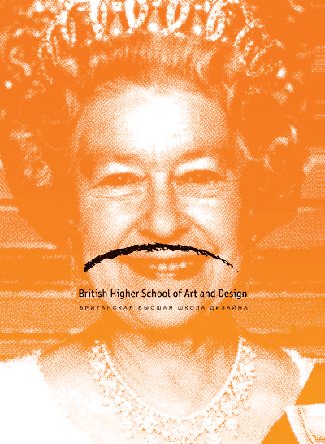
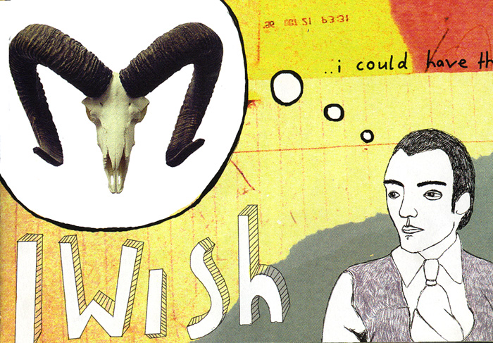
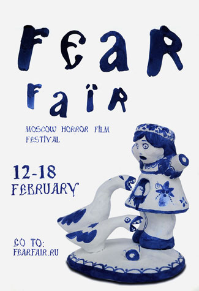
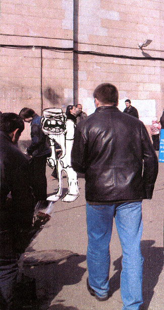
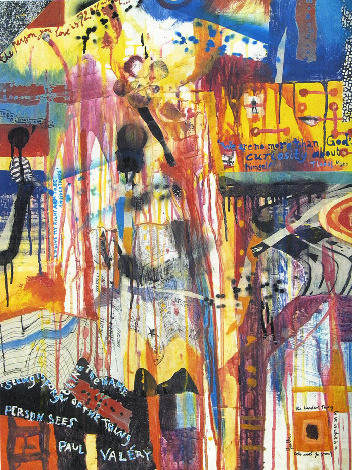

АЛЬМА-МАТЕР
Выставка в БВШД
Я хочу кое-что прояснить.
Но сперва расскажу вам одну историю. Это моя любимая история, совершенно дзенская, чрезвычайно поучительная. Как вы, может быть, знаете, фамилия моя означает в переводе «учитель». Есть у меня один знакомый, и что важно, соплеменник, сколько-то проживший на исторической родине. По имени Джим. Встречались мы редко, и знал я о нем мало, пока наш общий друг мне не рассказал (как раз по дороге к Джиму в гости), что Джим — глубокий знаток жизни и в неком узком кругу числится едва ли не за гуру. Ничего выдающегося до тех пор я в этом человеке не замечал, поэтому глубоко задумался. И вот пришли мы к Джиму, сели пить чай, и первое, что Джим мне сказал, было «А, Меламед, ты ведь знаешь, это «ученик». Я стал зачем-то спорить (хотя правильнее всего было бы, конечно, встать, поклониться и за весь вечер после этого не произнести ни одного слова), и переспорить его не смог.
Это вот к чему. Все мои патетические воззвания и полезные советы обращены, прежде всего, ко мне самому — я страстно желаю дорасти до собственного лирического героя. То, что я пошел работать в Британскую Школу Дизайна, случилось не потому, что я все уже умею и знаю — как раз наоборот. И я учусь, и за этот учебный год много чему научился. Было у кого.
Так вот. Как уже было объявлено, 9-го числа в БВШД откроется ежегодная выставка студенческих работ.

(К слову, это я впервые за годы выступил дизайнером). Приходите.
Для затравки вешаю пару картинок, которые мне по разным причинам запомнились. Подробный фотототчет (с поучениями) воспоследует.
Женя Баринова

Саша Выдманова

Лиза Тебина
Лена Наяшкова

Катя Тютюнник
